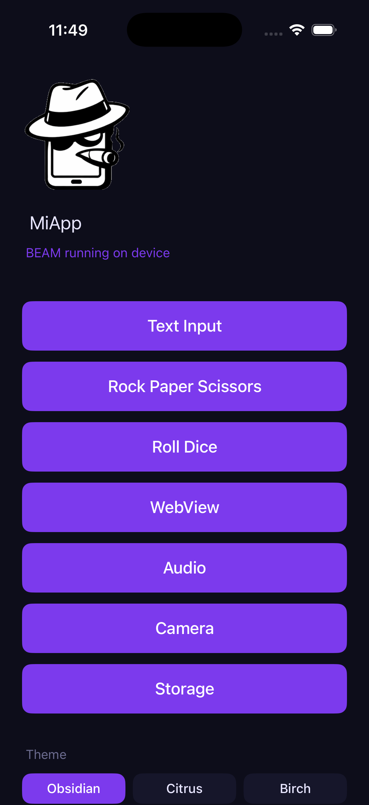
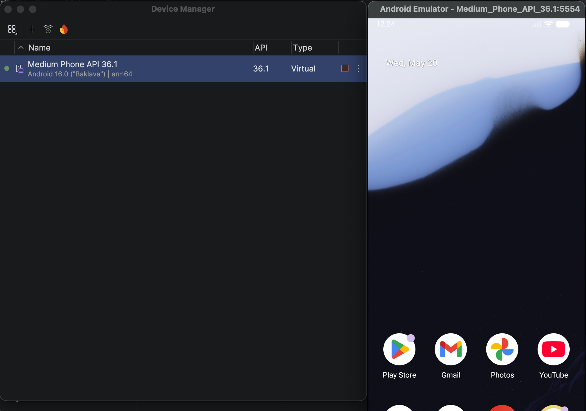
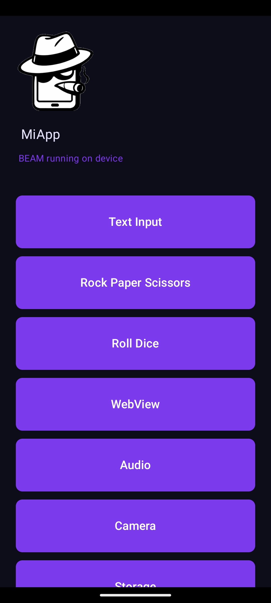

Configurar Entorno de Desarrollo
En este capítulo se verá la configuración inicial necesaria para lograr utilizar los ecosistemas de Android e iOS con Mob.
Instalación
Para instalar Mob y crear un nuevo proyecto se debe usar el comando
$ mix archive.install hex mob_newEsto instalará el comando mob el cual puede ser usado con mix mob.*
Instalación de Dependencias
Al ser un framework de aplicaciones móviles requiere de la instalación de las herramientas de Xcode (iOS) y Android Studio (Android).
|
Xcode es exclusivo de computadores Apple. |
Se recomienda la utilización de los gestores de paquetes: mise (https://mise.jdx.dev) y brew (https://brew.sh/)
Antes de usar mob debemos instalar las siguientes dependencias:
Elixir
Para la versión de Mob 0.6.14 se debe tener las siguientes versiones de Elixir y Erlang
-
Erlang 29: https://www.erlang.org/ (
$ mise use -g erlang@29) -
Elixir 1.20: https://elixir-lang.org/ (
$ mise use -g elixir@1.20.0-rc.5-otp-29)
|
Ver la guía de instalación de Erlang y Elixir para las dependencias |
Android
Instalar Android Studio: https://developer.android.com/studio
Java
Es necesario Java 21 como máximo. Para esto se instalará temurin que viene preconfigurado.
-
temurin (Java 21): (
$ brew install --cask temurin@21).
NDK
Para Mob 0.6.14 se debe instalar NDK 27.2.12479018.
Android Studio → SDK Manager → SDK Tools → NDK (Side by side)
Para versiones más recientes de Mob se debe revisar el archivo de configuración
lib/mob_dev/ndk_version.ex en el atributo @recommended.
Platform Tools
También en el SDK Manager de Android Studio instalar las herramientas de línea de comandos.
Android SDK Build-Tools y Android SDK Command-line Tools. Ambas con la versión predefinida.
La usada en Mob 0.6.14 es la API 34.
Se debe verificar que las rutas de acceso estén en la variable de entorno de la terminal.
ANDROID_HOME=$HOME/Library/Android/sdk
PATH=$PATH:$ANDROID_HOME/platform-tools:$ANDROID_HOME/cmdline-tools/latest/bin:$ANDROID_HOME/build-tools/latestAl ejecutar el comando adb version debería mostrar algo similar a lo siguiente:
adb version
Android Debug Bridge version 1.0.41
Version 36.0.2-14143358
Installed as /Users/user/Library/Android/sdk/platform-tools/adb
Running on Darwin 25.3.0 (arm64)Xcode
Instalar Xcode: https://developer.apple.com/xcode/
Herramientas de Apoyo
-
Zig: https://ziglang.org/ (
$ mise use -g zig) -
ideviceinfo: (
$ brew install libimobiledevice) -
Python3: https://www.python.org/downloads/ (
$ mise use -g python) -
Rsync: https://formulae.brew.sh/formula/rsync (
$ brew install rsync) -
Idb: (
$ brew install facebook/fb/idb-companion)
Crear un nuevo proyecto
Ahora tenemos todo lo necesario para crear una aplicación con Mob para esto ejecutamos
el comando mob.new
$ mix mob.new mi_appDebería mostrar algo como lo siguiente:
Your Mob app mi_app is ready!
cd mi_app
mix mob.install # generates app icon + first-run setup
mix mob.provision # iOS only, one-time: register bundle ID
# + download provisioning profile (skip if
# you're only running on the simulator)
First deploy — edit mob.exs and android/local.properties with your local paths, then build native binaries
(APK + iOS app), install on device, and push BEAMs:
mix mob.deploy --native # first time, or after native code changes
Day-to-day development — just push changed BEAMs, no native rebuild needed:
mix mob.deploy # fast push + restart
mix mob.watch # auto-push on file saveAhora hacemos cd mi_app y ejecutamos, mix mob.install seguido de mix mob.doctor para verificar que este todo bien configurado.
$ cd mi_appAhora ejecutamos mix mob.install
$ mix mob.installY verificamos que este bien configurado con mix mob.doctor.
$ mix mob.doctor
=== Mob Doctor ===
Tools
✓ version manager — mise (/Users/camilo/.local/bin/mise)
✓ Elixir — 1.20.0-rc.5
✓ OTP — 29 (ERTS 17.0)
✓ Hex — 2.4.2
✓ epmd — /Users/camilo/.local/share/mise/installs/erlang/29.0/erts-17.0/bin/epmd
✓ adb — /Users/camilo/Library/Android/sdk/platform-tools/adb
✓ xcrun — Xcode 26.5
✓ zig — 0.16.0
✓ java — openjdk version "21.0.11" 2026-04-21 LTS
✓ Android SDK — /Users/camilo/Library/Android/sdk
✓ Android NDK — 27.2.12479018 (recommended) ✓
✓ python3 — /usr/bin/python3
✓ rsync — /usr/bin/rsync
✓ ideviceinfo — /opt/homebrew/bin/ideviceinfo
Project
✓ mob.exs — found
✓ mob_dir — /Users/camilo/Developer/jasonelle.com/v4/mi_app/deps/mob
⚠ bundle_id — not set in mob.exs (only needed for mob.battery_bench)
Add to mob.exs: config :mob_dev, bundle_id: "com.example.myapp"
Build
✓ mix deps — 47 deps fetched
✓ compiled — 1466 BEAMs in 47 lib(s)
OTP Cache
✓ OTP Android — otp-android-d9045670 (erts-17.0)
✓ OTP iOS simulator — otp-ios-sim-d9045670 (erts-17.0)
Devices
⚠ Android devices — none authorized
Connect a device via USB (enable USB Debugging) or start an emulator.
See: https://developer.android.com/studio/debug/dev-options
✓ iOS simulator — iPhone 16e (D4E176CD-5769-45FF-AAF2-4BBEAB204803)
2 warning(s) — optional items above may limit some features.iOS
Vamos a probar la aplicación en un simulador de iOS.
Para eso listamos los simuladores disponibles
$ xcrun simctl listDebería mostrar un listado de opciones disponibles.
...
== Devices ==
-- iOS 26.2 --
iPhone 17 Pro (6DF2A610-B574-4BDE-9E3D-A281F7842D71) (Shutdown)
iPhone 17 Pro Max (5C291515-F930-410E-8036-9BE1DFB9BB30) (Shutdown)
iPhone Air (B568F0D8-E030-43CB-990A-F32A8AC759AB) (Shutdown)
iPhone 17 (1A9056B1-DC9E-4046-9649-0361790BB92B) (Shutdown)
iPhone 16e (D4E176CD-5769-45FF-AAF2-4BBEAB204803) (Shutdown)
iPad Pro 13-inch (M5) (CC4A3E59-5F0D-4F6B-B622-FF2B076D1245) (Shutdown)
iPad Pro 11-inch (M5) (E0EE6E84-A5C6-4CAE-BE0A-2F330C908AA5) (Shutdown)
iPad mini (A17 Pro) (E6D5FF90-1E1C-43D6-8E1F-BF3F261841F2) (Shutdown)
iPad (A16) (2EB53E9D-059F-4995-96D8-56E66691D9E7) (Shutdown)
iPad Air 13-inch (M3) (05D7C9B4-9834-4EB6-8D1E-8EE32A4D8F44) (Shutdown)
iPad Air 11-inch (M3) (D80FC49C-1654-4C8E-9A80-66D0F09653D5) (Shutdown)
-- iOS 26.4 --
iPhone 17 Pro (1B57FB9E-D942-462D-B8AE-776D7FB53391) (Shutdown)
iPhone 17 Pro Max (574B8EDA-410F-4AB8-9A63-0CBA1A341CA6) (Shutdown)
iPhone 17e (19535F16-F908-47F7-A1D3-33594A573609) (Shutdown)
iPhone Air (497D60C3-506B-4517-AE54-6A55FC7708B4) (Shutdown)
iPhone 17 (DED5CF13-529A-4610-AF3F-8D76349C32ED) (Shutdown)
iPad Pro 13-inch (M5) (B537DE2E-C74A-456B-BD45-8DEC09A7039C) (Shutdown)
iPad Pro 11-inch (M5) (9318579F-D8AD-4075-A1CE-4DD82E520DE0) (Shutdown)
iPad mini (A17 Pro) (C51DE0E4-9FB8-428A-BB6F-FD7F833D8FAA) (Shutdown)
iPad Air 13-inch (M4) (FC2E2C0E-A849-4378-AFD8-2AFFAAF6E78A) (Shutdown)
iPad Air 11-inch (M4) (D5D6E897-1E0D-4FBB-8822-833AD92E276C) (Shutdown)
iPad (A16) (C5C71011-4895-430A-BB27-9DD8FE43B4FD) (Shutdown)Para este caso podremos usar un iPhone 16e.
$ xcrun simctl boot "iPhone 16e"Y lo abrimos para verificar.
$ open -a SimulatorFinalmente podremos instalar la aplicación en el simulador.
La primera vez es necesario utilizar la opción --native para la compilación
de las dependencias.
$ mix mob.deploy --native --iosPara posteriores instalaciones solo se debe añadir los archivos .beam modificados.
$ mix mob.deploy --iosAl abrir la aplicación en el simulador debería mostrar una pantalla similar a la siguiente:

Android
Para android se debe instalar un emulador con Android Studio → Device Manager.

|
Notar que el emulador debe estar ejecutandose |
Luego simplemente ejecutar mob.deploy --android
$ mix mob.deploy --native --androidPara posteriores instalaciones solo se debe añadir los archivos .beam modificados.
$ mix mob.deploy --android